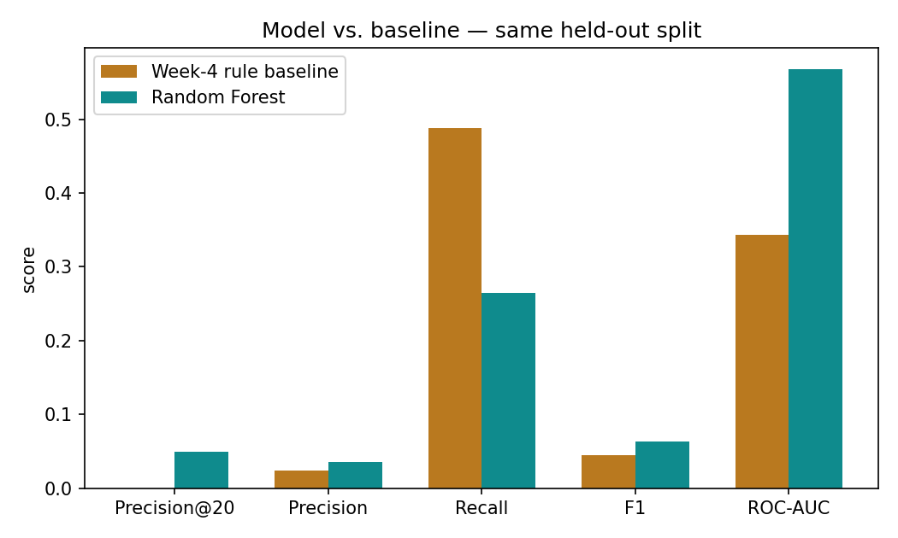
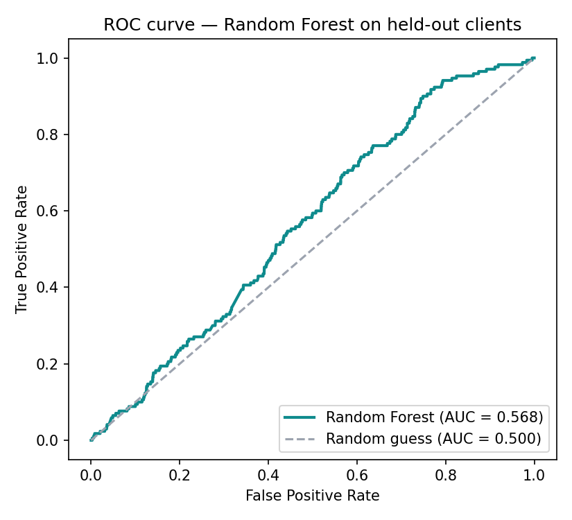
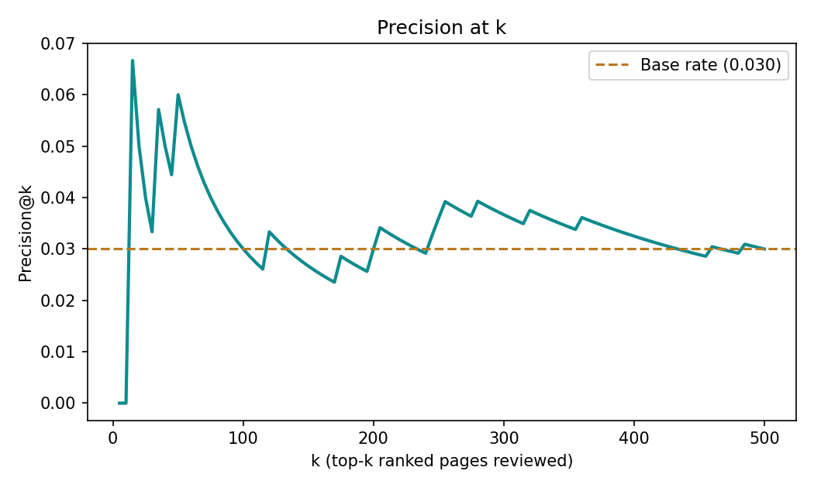

Research Paper · Machine Learning Track · FlyRank AI Fluency Program
Does Historical Search & Engagement Data Predict Which Pages Need a Content Refresh?
Can historical search and engagement signals identify which pages most need a content refresh, before a human reviews them? Using a 27,532-row working sample drawn from FlyRank's production search-and-engagement warehouse (78.8 million daily fact rows across 104 pseudonymized clients), I built a grouped-by-client Random Forest classifier and compared it against a simple rule-based baseline on an identical, client-disjoint held-out split. The model showed a modest but real improvement in ranking quality (ROC-AUC 0.568 vs. 0.344; Precision@20 0.05 vs. a 0.030 base rate), while its recall was actually lower than the simpler rule (0.265 vs. 0.488) — a genuine trade-off, not a clean win. The practical takeaway: the ranking carries a real but narrow signal, concentrated at the very top of the queue, intended as decision-support for a human content reviewer — not an automated publishing system.
1
Problem Framing
Unit of analysis: one content page, in one calendar month. Output: a priority score and rank for that page, plus a plain-words reason code. Action a human takes: a content reviewer opens the highest-ranked pages first and decides, page by page, whether a refresh is warranted.
Cost of a wrong call: a false positive (the model flags a page that didn't need attention) costs a reviewer a few wasted minutes of inspection. A false negative (a page that genuinely needed a refresh gets buried in the queue) costs the client organic traffic and ranking for longer than necessary — a more expensive mistake. That asymmetry is why recall, not just precision, matters throughout this paper.
Content teams manage far more pages than they can manually review in a given month. Sorted alphabetically or by publish date, that list carries no information about which pages are actually losing ground in search. Historical signals already sitting in the data — CTR, ranking position, traffic trend, engagement — are a plausible, cheap way to produce a better ordering than the default list. This paper tests how much better, and is explicit about where that ordering breaks down.
This is the actual content-prioritization problem behind the FlyRank ML internship dataset itself: FlyRank's own clients each publish far more pages than any editorial team can review by hand every month, and the 104-client, 78.8-million-row warehouse this paper draws from exists precisely because that prioritization problem is real and recurring across FlyRank's client base — not a hypothetical case study invented for this report.
2
Data Safety
Source: the FlyRank ML Internship dataset — 78,835,655 daily fact rows, 104 pseudonymized clients, 519,606 pseudonymized content items. All client and content identifiers are pseudonymized at the source.
Working sample: one row per content item per month, sliced to March 2026 (a mid-panel month — the most recent days in this release are intentionally incomplete). After dropping rows missing core fields, the working sample is 27,532 rows: 21,884 training rows (24 clients), 5,648 test rows (7 clients), zero client overlap.
Deliberately excluded, and why:
- Any future or post-refresh performance metric — including this would leak the outcome the model is trying to predict before the fact.
- Rows missing client ID, CTR, average position, trend direction, or search volume, rather than imputing a decision-relevant signal.
Leakage risks considered: the proxy label is built directly from
ctr, trend_direction, and avg_position. None of
these three columns — nor trend_pct — appear in the model's feature list;
only the 8 numeric and 3 categorical features below were used to predict the label those
three columns define. client_id and content_id are used only
for the grouped split, never as model features.
Client-identifying details: none appear anywhere in this paper, the capstone notebook, or the repository — all IDs are the dataset's own pseudonymized values.
3
Baseline
The comparison point is the Week-4 rule-based baseline: a simple, transparent prioritization rule built from the same signal family (low CTR, declining trend, weak position) used before any model was introduced — a fair comparison because it uses the same underlying signals, just combined by hand instead of learned. Its metrics below are as recorded in the internship's own validation notebook, evaluated on the identical client-disjoint split used for the model.
4
Model / Analysis
Method: Random Forest classifier — chosen for its ability to capture non-linear interactions between signals (e.g. "low CTR only matters combined with high search volume") without heavy feature engineering, and for producing a continuous score suitable for ranking rather than only a hard yes/no.
Features used (11): search volume, competition, CPC, word count, character count, engagement rate, scroll rate, AI-referral traffic share (numeric); content type, main search intent, competition level (categorical) — all knowable at the point a reviewer would look at the page.
Left out on purpose: ctr, trend_direction,
trend_pct, avg_position (label-derived — see Data Safety),
and both ID columns (used only for grouping).
Target, in one sentence: needs_refresh = 1 if CTR ≤ 25th
percentile and trend is declining and avg. position ≥ 75th percentile
— a proxy for editorial priority, not a verified outcome, with thresholds computed on
the training split only.
5
Evaluation
Split: client-grouped (GroupShuffleSplit, 80/20) — no
client's pages appear in both train and test, a harder and more honest test than a
random row-level split. Base rate: 3.0% of the 5,648 test rows are
proxy-positive — reported here because a high raw score can otherwise just reflect a
high (or low) base rate rather than real skill.
| Metric | Week-4 baseline | Random Forest |
|---|---|---|
| Precision@20 (base rate 0.030) | 0.00 | 0.05 |
| Precision | 0.0237 | 0.0358 |
| Recall | 0.4882 | 0.2647 |
| F1 | 0.0453 | 0.0630 |
| ROC-AUC | 0.3439 | 0.5682 |



What the errors actually look like
1,213 false positives and 125 false negatives on the test set. Two patterns stand out more than the summary metrics show:
- False positives cluster on zero-engagement, zero-CTR pages with a "stable"
or "new" trend — the model reads near-zero engagement as a strong refresh
signal even when the trend itself isn't declining, likely over-weighting
engagement_ratein isolation. - False negatives cluster on genuinely declining pages the model scored very low (as low as 0.011–0.022) despite a real downward trend — cases where engagement and scroll depth looked locally fine even as the page's search performance was actually deteriorating. This is the costlier error class given Section 1.
6
Interpretation
Permutation importance (drop in ROC-AUC when a feature is shuffled) on the held-out set:
| Feature | Importance |
|---|---|
| engagement_rate | 0.0313 |
| scroll_rate | 0.0240 |
| char_count | 0.0210 |
| word_count | 0.0107 |
| competition | 0.0071 |
| competition_level | 0.0041 |
| content_type | 0.0000 |
| main_intent | −0.0016 |
In plain words: engagement and scroll depth carry most of the model's usable signal, with page length a distant third. Content type and main search intent add essentially nothing — content_type's importance is exactly zero and main_intent is slightly negative, meaning the model would do just as well, or fractionally better, without them. This is a legitimate negative result worth stating plainly rather than hiding: two of the eleven features earn their place in the model on faith, not evidence, in this backtest.
No single feature dominates — even the top feature's importance (0.031) is small in absolute terms, consistent with the overall weak-but-real signal shown by the 0.568 ROC-AUC. This is a sanity check that the model is discriminating on genuine engagement signal rather than an accidental artifact.
7
Recommendation
The model's score was used to build a ranked, reason-coded action queue for human review
(full methodology and code in ML-10). Every recommendation carries a reason
code describing which observable signals were present — never a claim that the page
definitely needs a refresh.
| Reason code | Count (of 5,648) |
|---|---|
| COMBINED_OPPORTUNITY | 2,799 |
| LOW_CTR | 859 |
| DECLINING_TREND | 814 |
| MODEL_SIGNAL_ONLY | 681 |
| HIGH_SEARCH_OPPORTUNITY | 289 |
| POOR_POSITION | 206 |
How a FlyRank editor would use this tomorrow: open the queue, start at rank 1, and treat the first ~50 rows as the highest-value use of limited review time — that's where Section 5's precision-at-k curve shows the real signal concentrates. Rows past k≈100 are barely better than picking at random from the base rate.
8
Reproducibility
Every number on this page can be re-run from a fresh clone:
git clone https://github.com/akinns247/Starter_Notebook247.git cd Starter_Notebook247 pip install -r requirements.txt jupyter nbconvert --to notebook --execute --inplace work/notebooks/capstone.ipynb
Random seed: random_state=42, fixed throughout for the
train/test split and the model. Sealed evaluation: the test-set metrics
above are produced once per run by capstone.ipynb and written to
work/outputs/capstone_metrics.json — that file, not this page, is the
source of truth; re-running the notebook regenerates it and this page's numbers should
match it exactly.
- Full repository
- Capstone notebook — mirrors this paper section by section
- Model training notebook
- Grouped validation & leakage audit
- Content action playbook (ML-10)
- Full written capstone report
9
Acknowledgments & Data Credit
Built on the FlyRank ML Internship dataset — flyrank.ai. Thank you to the FlyRank AI Fluency Program and my ML mentor for the structure, the real data, and the honest-claims standard this paper was held to throughout.